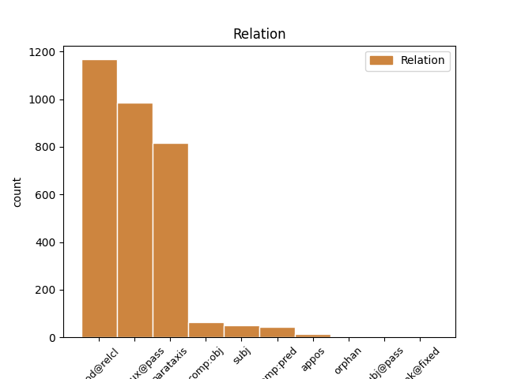
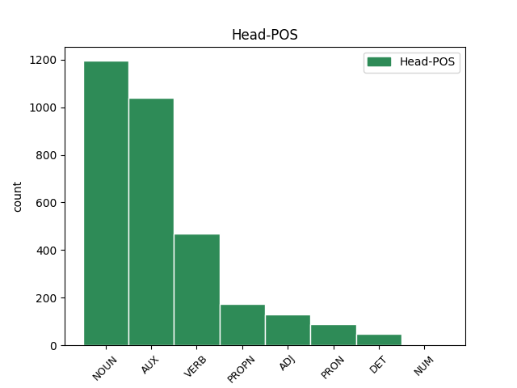
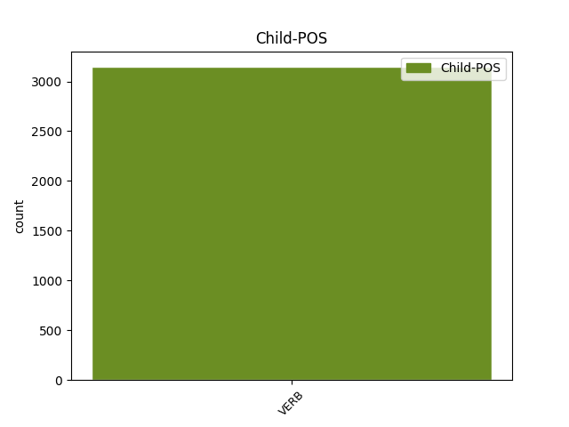

Distribution of features within this leaf



Agreement Rules sorted by frequency.
- When the dependent token is the complement for auxiliary(comp:aux@pass) of the head token, and the dependent token is VERB.
1 Весь _ _ _ _ 0 _ _ _
2 лес _ _ _ _ 0 _ _ _
3 был быть AUX _ Aspect=Imp|Gender=Masc|Mood=Ind|Number=Sing|Tense=Past|VerbForm=Fin|Voice=Act 0 _ _ _
4 населен населить VERB _ Aspect=Perf|Gender=Masc|Number=Sing|Tense=Past|Variant=Short|VerbForm=Part|Voice=Pass 3 comp:aux@pass _ _
5 голосами _ _ _ _ 0 _ _ _
6 прошлого _ _ _ _ 0 _ _ _
7 , _ _ _ _ 0 _ _ _
8 и _ _ _ _ 0 _ _ _
9 я _ _ _ _ 0 _ _ _
10 впервые _ _ _ _ 0 _ _ _
11 с _ _ _ _ 0 _ _ _
12 ошеломляющей _ _ _ _ 0 _ _ _
13 силой _ _ _ _ 0 _ _ _
14 ощутил _ _ _ _ 0 _ _ _
15 , _ _ _ _ 0 _ _ _
16 как _ _ _ _ 0 _ _ _
17 много _ _ _ _ 0 _ _ _
18 пробыл _ _ _ _ 0 _ _ _
19 на _ _ _ _ 0 _ _ _
20 этом _ _ _ _ 0 _ _ _
21 свете _ _ _ _ 0 _ _ _
22 и _ _ _ _ 0 _ _ _
23 что _ _ _ _ 0 _ _ _
24 прожитое _ _ _ _ 0 _ _ _
25 - _ _ _ _ 0 _ _ _
26 это _ _ _ _ 0 _ _ _
27 не _ _ _ _ 0 _ _ _
28 разбег _ _ _ _ 0 _ _ _
29 для _ _ _ _ 0 _ _ _
30 взлета _ _ _ _ 0 _ _ _
31 в _ _ _ _ 0 _ _ _
32 какую-то _ _ _ _ 0 _ _ _
33 будущую _ _ _ _ 0 _ _ _
34 , _ _ _ _ 0 _ _ _
35 настоящую _ _ _ _ 0 _ _ _
36 жизнь _ _ _ _ 0 _ _ _
37 , _ _ _ _ 0 _ _ _
38 что _ _ _ _ 0 _ _ _
39 это _ _ _ _ 0 _ _ _
40 уже _ _ _ _ 0 _ _ _
41 жизнь _ _ _ _ 0 _ _ _
42 , _ _ _ _ 0 _ _ _
43 в _ _ _ _ 0 _ _ _
44 которой _ _ _ _ 0 _ _ _
45 все _ _ _ _ 0 _ _ _
46 связано _ _ _ _ 0 _ _ _
47 : _ _ _ _ 0 _ _ _
48 далекое _ _ _ _ 0 _ _ _
49 прошлое _ _ _ _ 0 _ _ _
50 с _ _ _ _ 0 _ _ _
51 настоящим _ _ _ _ 0 _ _ _
52 , _ _ _ _ 0 _ _ _
53 а _ _ _ _ 0 _ _ _
54 если _ _ _ _ 0 _ _ _
55 мне _ _ _ _ 0 _ _ _
56 суждено _ _ _ _ 0 _ _ _
57 будущее _ _ _ _ 0 _ _ _
58 , _ _ _ _ 0 _ _ _
59 то _ _ _ _ 0 _ _ _
60 и _ _ _ _ 0 _ _ _
61 оно _ _ _ _ 0 _ _ _
62 окажется _ _ _ _ 0 _ _ _
63 нерасторжимо _ _ _ _ 0 _ _ _
64 связанным _ _ _ _ 0 _ _ _
65 с _ _ _ _ 0 _ _ _
66 пережитым _ _ _ _ 0 _ _ _
67 ; _ _ _ _ 0 _ _ _
1 Я _ _ _ _ 0 _ _ _
2 шел _ _ _ _ 0 _ _ _
3 дальше _ _ _ _ 0 _ _ _
4 через _ _ _ _ 0 _ _ _
5 поле _ _ _ _ 0 _ _ _
6 и _ _ _ _ 0 _ _ _
7 прекрасный _ _ _ _ 0 _ _ _
8 , _ _ _ _ 0 _ _ _
9 медово _ _ _ _ 0 _ _ _
10 благоухающий _ _ _ _ 0 _ _ _
11 , _ _ _ _ 0 _ _ _
12 сыроватый _ _ _ _ 0 _ _ _
13 овраг _ _ _ _ 0 _ _ _
14 на _ _ _ _ 0 _ _ _
15 взгорок взгорок NOUN _ Animacy=Inan|Case=Acc|Gender=Masc|Number=Sing 0 _ _ _
16 , _ _ _ _ 0 _ _ _
17 по _ _ _ _ 0 _ _ _
18 которому _ _ _ _ 0 _ _ _
19 простирался простираться VERB _ Aspect=Imp|Gender=Masc|Mood=Ind|Number=Sing|Tense=Past|VerbForm=Fin|Voice=Mid 15 mod@relcl _ _
20 на _ _ _ _ 0 _ _ _
21 километры _ _ _ _ 0 _ _ _
22 великолепный _ _ _ _ 0 _ _ _
23 смешанный _ _ _ _ 0 _ _ _
24 лес _ _ _ _ 0 _ _ _
25 с _ _ _ _ 0 _ _ _
26 густым _ _ _ _ 0 _ _ _
27 , _ _ _ _ 0 _ _ _
28 щедрым _ _ _ _ 0 _ _ _
29 подлеском _ _ _ _ 0 _ _ _
30 . _ _ _ _ 0 _ _ _
1 И _ _ _ _ 0 _ _ _
2 я _ _ _ _ 0 _ _ _
3 послушался послушаться VERB _ Aspect=Perf|Gender=Masc|Mood=Ind|Number=Sing|Tense=Past|VerbForm=Fin|Voice=Mid 0 _ _ _
4 голоса _ _ _ _ 0 _ _ _
5 - _ _ _ _ 0 _ _ _
6 полез полезть VERB _ Aspect=Perf|Gender=Masc|Mood=Ind|Number=Sing|Tense=Past|VerbForm=Fin|Voice=Act 3 parataxis _ _
7 напролом _ _ _ _ 0 _ _ _
8 в _ _ _ _ 0 _ _ _
9 еловую _ _ _ _ 0 _ _ _
10 теснотищу _ _ _ _ 0 _ _ _
11 и _ _ _ _ 0 _ _ _
12 быстро _ _ _ _ 0 _ _ _
13 накопал _ _ _ _ 0 _ _ _
14 с _ _ _ _ 0 _ _ _
15 десяток _ _ _ _ 0 _ _ _
16 отличных _ _ _ _ 0 _ _ _
17 белых _ _ _ _ 0 _ _ _
18 грибов _ _ _ _ 0 _ _ _
19 . _ _ _ _ 0 _ _ _
1 Весь _ _ _ _ 0 _ _ _
2 лес _ _ _ _ 0 _ _ _
3 был _ _ _ _ 0 _ _ _
4 населен _ _ _ _ 0 _ _ _
5 голосами _ _ _ _ 0 _ _ _
6 прошлого _ _ _ _ 0 _ _ _
7 , _ _ _ _ 0 _ _ _
8 и _ _ _ _ 0 _ _ _
9 я _ _ _ _ 0 _ _ _
10 впервые _ _ _ _ 0 _ _ _
11 с _ _ _ _ 0 _ _ _
12 ошеломляющей _ _ _ _ 0 _ _ _
13 силой _ _ _ _ 0 _ _ _
14 ощутил ощутить VERB _ Aspect=Perf|Gender=Masc|Mood=Ind|Number=Sing|Tense=Past|VerbForm=Fin|Voice=Act 0 _ _ _
15 , _ _ _ _ 0 _ _ _
16 как _ _ _ _ 0 _ _ _
17 много _ _ _ _ 0 _ _ _
18 пробыл пробыть VERB _ Aspect=Perf|Gender=Masc|Mood=Ind|Number=Sing|Tense=Past|VerbForm=Fin|Voice=Act 14 comp:pred _ _
19 на _ _ _ _ 0 _ _ _
20 этом _ _ _ _ 0 _ _ _
21 свете _ _ _ _ 0 _ _ _
22 и _ _ _ _ 0 _ _ _
23 что _ _ _ _ 0 _ _ _
24 прожитое _ _ _ _ 0 _ _ _
25 - _ _ _ _ 0 _ _ _
26 это _ _ _ _ 0 _ _ _
27 не _ _ _ _ 0 _ _ _
28 разбег _ _ _ _ 0 _ _ _
29 для _ _ _ _ 0 _ _ _
30 взлета _ _ _ _ 0 _ _ _
31 в _ _ _ _ 0 _ _ _
32 какую-то _ _ _ _ 0 _ _ _
33 будущую _ _ _ _ 0 _ _ _
34 , _ _ _ _ 0 _ _ _
35 настоящую _ _ _ _ 0 _ _ _
36 жизнь _ _ _ _ 0 _ _ _
37 , _ _ _ _ 0 _ _ _
38 что _ _ _ _ 0 _ _ _
39 это _ _ _ _ 0 _ _ _
40 уже _ _ _ _ 0 _ _ _
41 жизнь _ _ _ _ 0 _ _ _
42 , _ _ _ _ 0 _ _ _
43 в _ _ _ _ 0 _ _ _
44 которой _ _ _ _ 0 _ _ _
45 все _ _ _ _ 0 _ _ _
46 связано _ _ _ _ 0 _ _ _
47 : _ _ _ _ 0 _ _ _
48 далекое _ _ _ _ 0 _ _ _
49 прошлое _ _ _ _ 0 _ _ _
50 с _ _ _ _ 0 _ _ _
51 настоящим _ _ _ _ 0 _ _ _
52 , _ _ _ _ 0 _ _ _
53 а _ _ _ _ 0 _ _ _
54 если _ _ _ _ 0 _ _ _
55 мне _ _ _ _ 0 _ _ _
56 суждено _ _ _ _ 0 _ _ _
57 будущее _ _ _ _ 0 _ _ _
58 , _ _ _ _ 0 _ _ _
59 то _ _ _ _ 0 _ _ _
60 и _ _ _ _ 0 _ _ _
61 оно _ _ _ _ 0 _ _ _
62 окажется _ _ _ _ 0 _ _ _
63 нерасторжимо _ _ _ _ 0 _ _ _
64 связанным _ _ _ _ 0 _ _ _
65 с _ _ _ _ 0 _ _ _
66 пережитым _ _ _ _ 0 _ _ _
67 ; _ _ _ _ 0 _ _ _
1 Всякий _ _ _ _ 0 _ _ _
2 сидящий сидеть VERB _ Aspect=Imp|Case=Nom|Gender=Masc|Number=Sing|Tense=Pres|VerbForm=Part|Voice=Act 13 subj _ _
3 на _ _ _ _ 0 _ _ _
4 тугом _ _ _ _ 0 _ _ _
5 , _ _ _ _ 0 _ _ _
6 пружинном _ _ _ _ 0 _ _ _
7 , _ _ _ _ 0 _ _ _
8 похожем _ _ _ _ 0 _ _ _
9 на _ _ _ _ 0 _ _ _
10 сердце _ _ _ _ 0 _ _ _
11 седле _ _ _ _ 0 _ _ _
12 велосипеда _ _ _ _ 0 _ _ _
13 казался казаться VERB _ Aspect=Imp|Gender=Masc|Mood=Ind|Number=Sing|Tense=Past|VerbForm=Fin|Voice=Mid 0 _ _ _
14 мне _ _ _ _ 0 _ _ _
15 существом _ _ _ _ 0 _ _ _
16 иного _ _ _ _ 0 _ _ _
17 , _ _ _ _ 0 _ _ _
18 высшего _ _ _ _ 0 _ _ _
19 порядка _ _ _ _ 0 _ _ _
20 . _ _ _ _ 0 _ _ _
1 Авторское _ _ _ _ 0 _ _ _
2 свидетельство _ _ _ _ 0 _ _ _
3 на _ _ _ _ 0 _ _ _
4 способ _ _ _ _ 0 _ _ _
5 получения _ _ _ _ 0 _ _ _
6 перрената _ _ _ _ 0 _ _ _
7 аммония _ _ _ _ 0 _ _ _
8 высокой _ _ _ _ 0 _ _ _
9 степени _ _ _ _ 0 _ _ _
10 чистоты _ _ _ _ 0 _ _ _
11 с _ _ _ _ 0 _ _ _
12 приоритетом _ _ _ _ 0 _ _ _
13 от _ _ _ _ 0 _ _ _
14 1969 _ _ _ _ 0 _ _ _
15 года _ _ _ _ 0 _ _ _
16 подтвердило подтвердить VERB _ Aspect=Perf|Gender=Neut|Mood=Ind|Number=Sing|Tense=Past|VerbForm=Fin|Voice=Act 0 _ _ _
17 : _ _ _ _ 0 _ _ _
18 направление _ _ _ _ 0 _ _ _
19 выбрано выбрать VERB _ Aspect=Perf|Gender=Neut|Number=Sing|Tense=Past|Variant=Short|VerbForm=Part|Voice=Pass 16 comp:obj _ _
20 правильно _ _ _ _ 0 _ _ _
21 . _ _ _ _ 0 _ _ _
1 С _ _ _ _ 0 _ _ _
2 такой _ _ _ _ 0 _ _ _
3 практикой _ _ _ _ 0 _ _ _
4 Монахов _ _ _ _ 0 _ _ _
5 тоже _ _ _ _ 0 _ _ _
6 еще _ _ _ _ 0 _ _ _
7 не _ _ _ _ 0 _ _ _
8 сталкивался сталкиваться VERB _ Aspect=Imp|Gender=Masc|Mood=Ind|Number=Sing|Tense=Past|VerbForm=Fin|Voice=Mid 0 _ _ _
9 ( _ _ _ _ 0 _ _ _
10 в _ _ _ _ 0 _ _ _
11 кино _ _ _ _ 0 _ _ _
12 что-то _ _ _ _ 0 _ _ _
13 такое _ _ _ _ 0 _ _ _
14 видел видеть VERB _ Aspect=Imp|Gender=Masc|Mood=Ind|Number=Sing|Tense=Past|VerbForm=Fin|Voice=Act 8 appos _ SpaceAfter=No
15 . _ _ _ _ 0 _ _ _
1 Изначально _ _ _ _ 0 _ _ _
2 произошедшее произойти VERB _ Aspect=Perf|Case=Nom|Gender=Neut|Number=Sing|Tense=Past|VerbForm=Part|Voice=Act 3 subj@pass _ _
3 было быть AUX _ Aspect=Imp|Gender=Neut|Mood=Ind|Number=Sing|Tense=Past|VerbForm=Fin|Voice=Act 0 _ _ _
4 проинтерпретировано _ _ _ _ 0 _ _ _
5 как _ _ _ _ 0 _ _ _
6 испытания _ _ _ _ 0 _ _ _
7 ядерной _ _ _ _ 0 _ _ _
8 бомбы _ _ _ _ 0 _ _ _
9 , _ _ _ _ 0 _ _ _
10 однако _ _ _ _ 0 _ _ _
11 анализ _ _ _ _ 0 _ _ _
12 ситуации _ _ _ _ 0 _ _ _
13 показал _ _ _ _ 0 _ _ _
14 , _ _ _ _ 0 _ _ _
15 что _ _ _ _ 0 _ _ _
16 это _ _ _ _ 0 _ _ _
17 предположение _ _ _ _ 0 _ _ _
18 неверно _ _ _ _ 0 _ _ _
19 . _ _ _ _ 0 _ _ _
1 Родственник _ _ _ _ 0 _ _ _
2 Камалова _ _ _ _ 0 _ _ _
3 прокурор _ _ _ _ 0 _ _ _
4 города _ _ _ _ 0 _ _ _
5 Уфы _ _ _ _ 0 _ _ _
6 Зайнетдинов _ _ _ _ 0 _ _ _
7 , _ _ _ _ 0 _ _ _
8 пишет _ _ _ _ 0 _ _ _
9 в _ _ _ _ 0 _ _ _
10 " _ _ _ _ 0 _ _ _
11 Правду _ _ _ _ 0 _ _ _
12 " _ _ _ _ 0 _ _ _
13 Р. _ _ _ _ 0 _ _ _
14 Богданов _ _ _ _ 0 _ _ _
15 , _ _ _ _ 0 _ _ _
16 фабрикует _ _ _ _ 0 _ _ _
17 уголовное _ _ _ _ 0 _ _ _
18 дело _ _ _ _ 0 _ _ _
19 , _ _ _ _ 0 _ _ _
20 и _ _ _ _ 0 _ _ _
21 пошло пойти VERB _ Aspect=Perf|Gender=Neut|Mood=Ind|Number=Sing|Tense=Past|VerbForm=Fin|Voice=Act 0 _ _ _
22 - _ _ _ _ 0 _ _ _
23 поехало поехать VERB _ Aspect=Perf|Gender=Neut|Mood=Ind|Number=Sing|Tense=Past|VerbForm=Fin|Voice=Act 21 unk@fixed _ _
24 следствие _ _ _ _ 0 _ _ _
25 , _ _ _ _ 0 _ _ _
26 принудительная _ _ _ _ 0 _ _ _
27 судебно-психиатрическая _ _ _ _ 0 _ _ _
28 экспертиза _ _ _ _ 0 _ _ _
29 , _ _ _ _ 0 _ _ _
30 лишение _ _ _ _ 0 _ _ _
31 депутатского _ _ _ _ 0 _ _ _
32 мандата _ _ _ _ 0 _ _ _
33 , _ _ _ _ 0 _ _ _
34 партийности _ _ _ _ 0 _ _ _
35 . _ _ _ _ 0 _ _ _
Disagree Examples:
1 И _ _ _ _ 0 _ _ _
2 Ефимова _ _ _ _ 0 _ _ _
3 развелась _ _ _ _ 0 _ _ _
4 , _ _ _ _ 0 _ _ _
5 " _ _ _ _ 0 _ _ _
6 И _ _ _ _ 0 _ _ _
7 , _ _ _ _ 0 _ _ _
8 по-моему _ _ _ _ 0 _ _ _
9 , _ _ _ _ 0 _ _ _
10 правильно _ _ _ _ 0 _ _ _
11 сделала делать VERB _ Aspect=Perf|Gender=Fem|Mood=Ind|Number=Sing|Tense=Past|VerbForm=Fin|Voice=Act 0 _ _ _
12 " _ _ _ _ 0 _ _ _
13 , _ _ _ _ 0 _ _ _
14 - _ _ _ _ 0 _ _ _
15 добавил добавить VERB _ Aspect=Perf|Gender=Masc|Mood=Ind|Number=Sing|Tense=Past|VerbForm=Fin|Voice=Act 11 parataxis _ _
16 Савельев _ _ _ _ 0 _ _ _
17 . _ _ _ _ 0 _ _ _
1 - _ _ _ _ 0 _ _ _
2 Какое _ _ _ _ 0 _ _ _
3 безобразие безобразие NOUN _ Animacy=Inan|Case=Nom|Gender=Neut|Number=Sing 0 _ _ _
4 , _ _ _ _ 0 _ _ _
5 - _ _ _ _ 0 _ _ _
6 сказал сказать VERB _ Aspect=Perf|Gender=Masc|Mood=Ind|Number=Sing|Tense=Past|VerbForm=Fin|Voice=Act 3 parataxis _ _
7 он _ _ _ _ 0 _ _ _
8 . _ _ _ _ 0 _ _ _
1 - _ _ _ _ 0 _ _ _
2 Знаете _ _ _ _ 0 _ _ _
3 , _ _ _ _ 0 _ _ _
4 все _ _ _ _ 0 _ _ _
5 устроилось устроиться VERB _ Aspect=Perf|Gender=Neut|Mood=Ind|Number=Sing|Tense=Past|VerbForm=Fin|Voice=Mid 0 _ _ _
6 , _ _ _ _ 0 _ _ _
7 Семен _ _ _ _ 0 _ _ _
8 Еремеевич _ _ _ _ 0 _ _ _
9 ! _ _ _ _ 0 _ _ _
10 - _ _ _ _ 0 _ _ _
11 начала начать VERB _ Aspect=Perf|Gender=Fem|Mood=Ind|Number=Sing|Tense=Past|VerbForm=Fin|Voice=Act 5 parataxis _ _
12 она _ _ _ _ 0 _ _ _
13 , _ _ _ _ 0 _ _ _
14 даже _ _ _ _ 0 _ _ _
15 не _ _ _ _ 0 _ _ _
16 поздоровавшись _ _ _ _ 0 _ _ _
17 . _ _ _ _ 0 _ _ _
1 Семен _ _ _ _ 0 _ _ _
2 Еремеевич _ _ _ _ 0 _ _ _
3 вызвал _ _ _ _ 0 _ _ _
4 секретаршу _ _ _ _ 0 _ _ _
5 и _ _ _ _ 0 _ _ _
6 , _ _ _ _ 0 _ _ _
7 разбирая _ _ _ _ 0 _ _ _
8 дела _ _ _ _ 0 _ _ _
9 , _ _ _ _ 0 _ _ _
10 поинтересовался интересоваться VERB _ Aspect=Perf|Gender=Masc|Mood=Ind|Number=Sing|Tense=Past|VerbForm=Fin|Voice=Mid 0 _ _ _
11 , _ _ _ _ 0 _ _ _
12 не _ _ _ _ 0 _ _ _
13 записывалась записываться VERB _ Aspect=Imp|Gender=Fem|Mood=Ind|Number=Sing|Tense=Past|VerbForm=Fin|Voice=Mid 10 comp:obj _ _
14 ли _ _ _ _ 0 _ _ _
15 на _ _ _ _ 0 _ _ _
16 прием _ _ _ _ 0 _ _ _
17 такая _ _ _ _ 0 _ _ _
18 худенькая _ _ _ _ 0 _ _ _
19 женщина _ _ _ _ 0 _ _ _
20 , _ _ _ _ 0 _ _ _
21 по _ _ _ _ 0 _ _ _
22 фамилии _ _ _ _ 0 _ _ _
23 , _ _ _ _ 0 _ _ _
24 кажется _ _ _ _ 0 _ _ _
25 , _ _ _ _ 0 _ _ _
26 Ефимова _ _ _ _ 0 _ _ _
27 . _ _ _ _ 0 _ _ _
1 Он _ _ _ _ 0 _ _ _
2 стал _ _ _ _ 0 _ _ _
3 кричать _ _ _ _ 0 _ _ _
4 , _ _ _ _ 0 _ _ _
5 стучать _ _ _ _ 0 _ _ _
6 кулаком _ _ _ _ 0 _ _ _
7 по _ _ _ _ 0 _ _ _
8 столу _ _ _ _ 0 _ _ _
9 и _ _ _ _ 0 _ _ _
10 один _ _ _ _ 0 _ _ _
11 раз _ _ _ _ 0 _ _ _
12 забыл забыть VERB _ Aspect=Perf|Gender=Masc|Mood=Ind|Number=Sing|Tense=Past|VerbForm=Fin|Voice=Act 0 _ _ _
13 пометить _ _ _ _ 0 _ _ _
14 на _ _ _ _ 0 _ _ _
15 важной _ _ _ _ 0 _ _ _
16 бумаге _ _ _ _ 0 _ _ _
17 гриф _ _ _ _ 0 _ _ _
18 " _ _ _ _ 0 _ _ _
19 секретно _ _ _ _ 0 _ _ _
20 , _ _ _ _ 0 _ _ _
21 чего _ _ _ _ 0 _ _ _
22 раньше _ _ _ _ 0 _ _ _
23 с _ _ _ _ 0 _ _ _
24 ним _ _ _ _ 0 _ _ _
25 никогда _ _ _ _ 0 _ _ _
26 не _ _ _ _ 0 _ _ _
27 случалось случаться VERB _ Aspect=Imp|Gender=Neut|Mood=Ind|Number=Sing|Tense=Past|VerbForm=Fin|Voice=Mid 12 parataxis _ SpaceAfter=No
28 . _ _ _ _ 0 _ _ _